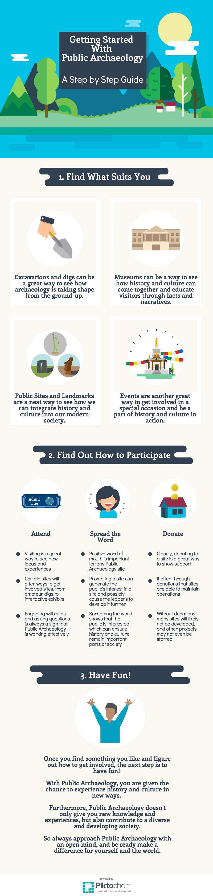
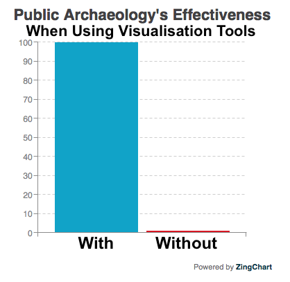

Visualisation
When considering the increasing digitization of Public Archaeology, visualisation is starting to play a key role in how research and data are understood and presented. Just as Public Archaeology can take on a variety of forms, there are also many ways in which visualisation can be implemented and incorporated into new and existing projects.
To demonstrate how visualisation can be applied to an existing project, the infographic below takes the information from the homepage of this Public Archaeology site and presents it in a new way. Through images, icons, and designs that streamline and present the information in a more eye-catching way, the it is made more accesible and easy to follow.

Thus, with essentially the same information, this quick guide presents the homepage-text in a much more visually appealing and engaging way through the infographic format.
Visualisation
Another example of using visualisation to take existing information and apply it in a new way is compiling data and presenting it in a way that can be read and understood quickly. Voyant, for instance, allows users to create images that take the most commonly occuring words in documents and websites to present the words in a visually appealing and easy-to-understand way. This image, for example, takes the top occuring words from the Public Archaeology homepage and the four webpages for the sites in Victoria (listed in the above infographic):

While this image is a fairly basic layout in Voyant, in nonetheless represents how visualisation can be used to take a lot of information and present it in a more comprehensible manner. Additionally, when looking at the image, one can note which words appear the most across the various pages, and thus draw conclusions regarding the themes and ideas that make up much of Public Archaeology.
In addition to using visualisation to present information in a more appealing way and reinterpret data in order to reach conclusions quickly and effectively, visualisation tools can form the foundation for new information. For instance, the infographic below is not based on previously-written data, but simply the attempt to create a visual representation of a new concept.

In short, visualisation is a useful tool within the realm of Public Archaeology. While these examples primarily focused on this site's theme of understanding Public Archaeology, visualisation can also be used in order to present information and data on specific research projects, heritage sites, and so forth.
All in all, the results of Public Archaeology's effectiveness with or without visualisation is quite clear...
